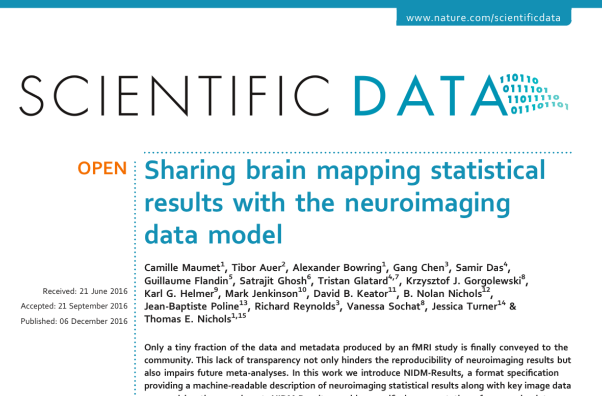
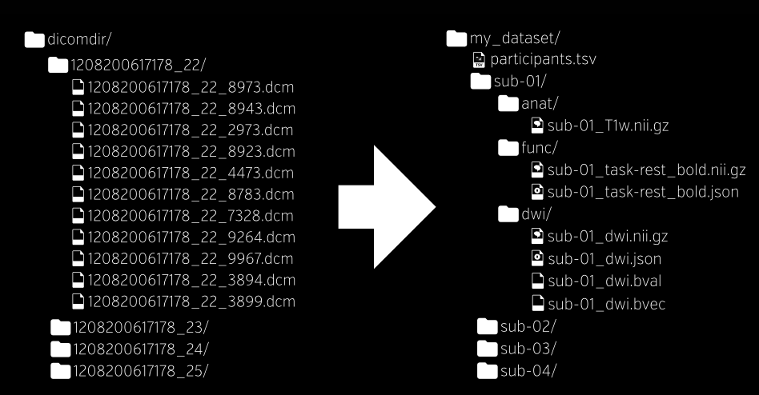
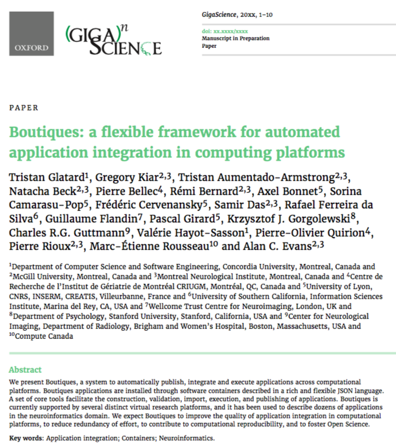
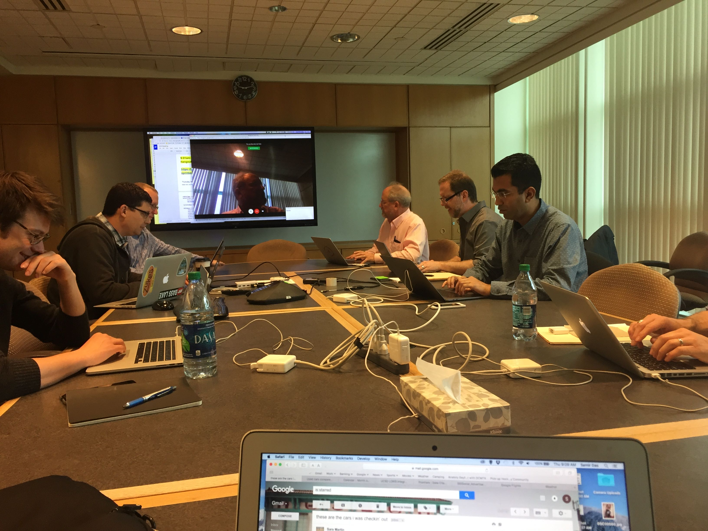

What’s involved?
Longitudinal Acquisition, Storage and Curation, Interoperability, Reproducibility, Transfer, Anonymization, Security, Privacy, Ethics, APIs, Validation, Quality Control, Protocol Checking, Preprocessing, Analysis, HPC, Provenance, Ontological Standarization, Data Harmonization, Upgrades, Maintenance, Bug Fixes, User Interface, Javascript, Bootstrap, Tracking, Extensibility, Data Management, Summary Statistics, Workflows, Development, Tool Integration, Data Sharing, Download, Multi-Modal Linking, Querying, Image Processing, Visualization, Networking, System Administration, Partnerships, Funding, HR ...No big deal!
LORIS-CBRAIN INTEGRATION
Benefits vs Challenges

What is Open Science?

|

|


Centralized or Distributed?


Richard Stallman |


|
Why did the MNI move towards Open Science?
https://www.mcgill.ca/neuro/open-science-0
Increased exposure
Greater collaborations
More citations
Less money spent of patents
New funding opportunities
Improved reproducibility
Enable scientific discovery
It's the future!
Aled Edwards video
Open Science Functionality
| Acquisition & Storage | Dissemination & Analysis |
|---|---|
| Organized/Accessible data | Centralized repository |
| Long term storage | Provenance Capture |
| Quality Control mechanisms | API for interoperability |
| Web visualization | Consent is factored in |
| Tablet/Mobile Friendly | User account access control |
| Anonymized automatically | Completely de-identified |
| Cross-modal linking | Cross-study correlation |
| Online Data Querying | Access to high performance computing |
What changes are necessary to make this a reality?
Improved Infrastructure
Standardization
Datasets
Tools & Environments
Improved Infrastructure
Databases, NoSQL, APIs, Version Control, Provenance Capture
NoSQL

LORIS API
Instrument Format


|
 |
Standardization & Interoperability
http://bids.neuroimaging.io/

|
 |

What is a container? |
 |
API Building & Standardization
Atlas template building

|
Goal: To create standardized JSON metadata to describe atlases For either volumetric or surface atlases Pipelines can access more atlases for anatomical standardization |
Consolidated datasets
ADNI, ICBM, NIHPD, Allen Mouse Brain, IBIS, Generation-R, ABIDE, ABIDE Preprocessed, ADHD 200, ADHD Preprocessed, Human Connectome Project, OMEGA, UK Biobank, Edinburgh Biobank, BigBrain, Talairach, 1000 Functional Connectomes, Colin 27, MNI 305, 1000 Brains, AAL, ANIMAL, MAVAN, PreventAD, PING, MNI 152, MNI 305, FSL...
Not enough datasets!

|

|
ADNI

|
|

|

|
|


|

|
|

|
|

|

|
Quebec Parkinson Network


|
|
Tools and Environments
Neurovault, NeuroSynth, CIVET, VIP, Boutiques, Git-Annex, SOLID, BIDS, NiDM, DiCAT, DCMTK, NiPype, ITK, Freesurfer, SPM, FSL, Mobile MRI, 1000 Brains, AAL, BrainCode, GitHub, Amazon Cloud, FSL, IDA, BrainVisa, DICOM Confidential, DockerHub, Gate, CMIND...
Too many Tools!

Neurovault Example


BrainBrowser
..a set of web-based 3D visualization tools primarily used for viewing neurological data i.e. MRI scans.
It allows for real-time manipulation and analysis of 3D neuroimaging data through any modern web browser. TRY ME!

|

|
Data Publishing
- Not Data Sharing -


Data Publishing Geeksquad for Persistent DOIs


|
Important value of hackathons to data sharing initiatives 
|
Open Science Beers
Beers at Else's - Wednesday's at 4:44pm

|
Thank you!Acknowledgements: Alex Zijdenbos, Dario Vins, Jonathan Harlap, Matt Charlet, Andrew Corderey, Sebastian Muehlboeck, Reza Adalat, Louis Collins, Vladimir Fonov, Marc Rousseau, Mia Petkova, Rathi Gnanasekaran, David Brownlee, Tarek Sherif, Pierre Rioux, Nic Kassis, Leigh MacIntyre, Claude Lepage, Ilana Leppert, Natasha Beck, Tristan Glatard, Bert Vincent, Lindsay Lewis, Najma Mahani, Elodie Portales-Casamar, Alden Woodward, Sylvain Milot, Jean Francois Malouin, Sylvain Baillet, Daniel Kroetz, Martin Weiss, Mathieu Desrosier, Jason Karamchandani, Amit Bar-Or, Ted Fon, John Brietner, Derek Lo, Patrick Bermudez, Chris Steele, Pamela Patterson and one of my favourites: Pierre Bellec! LORIS team on left |